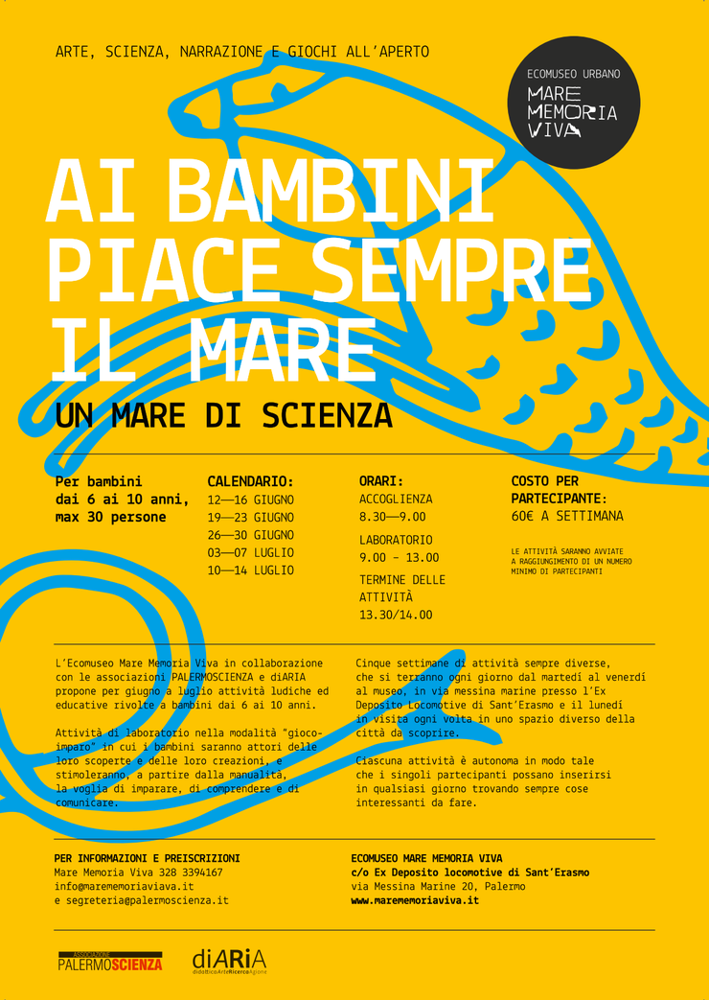
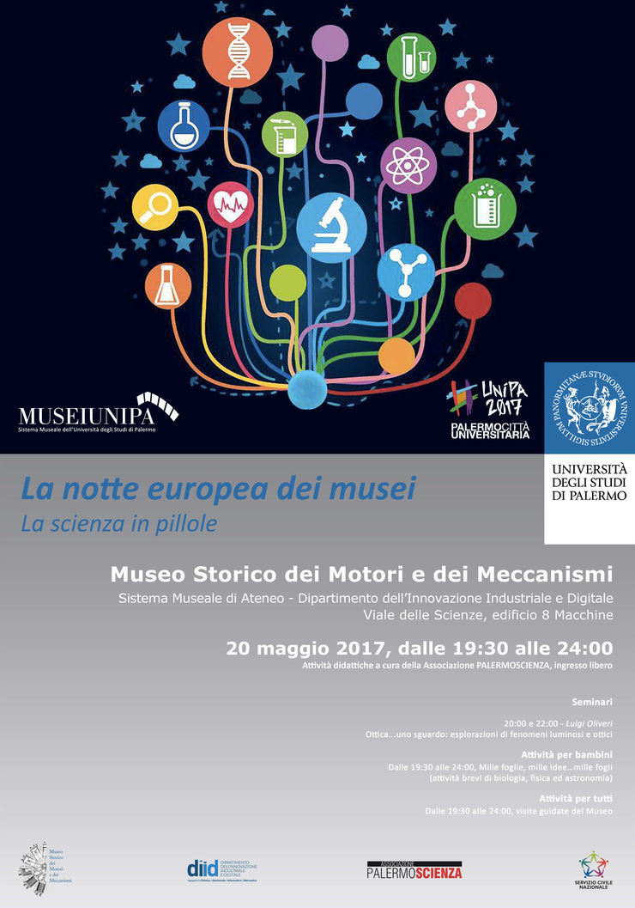
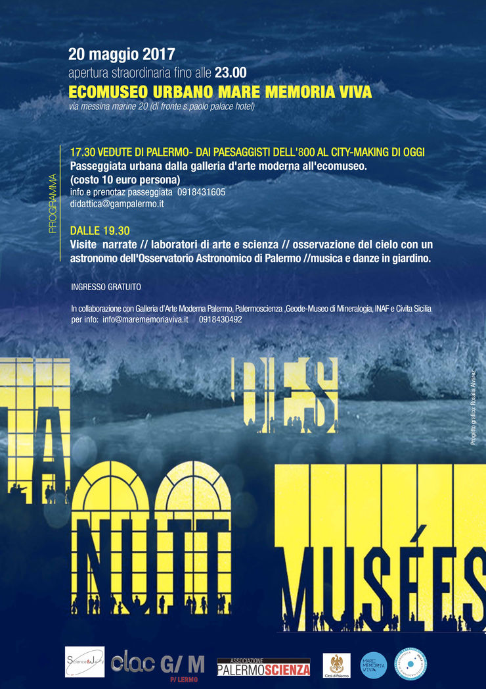
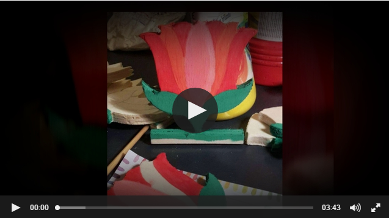
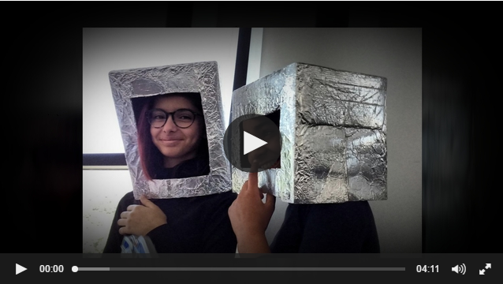
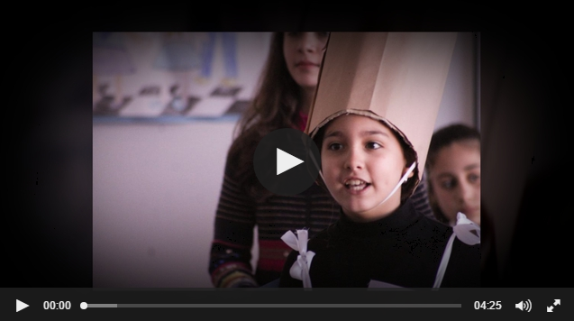
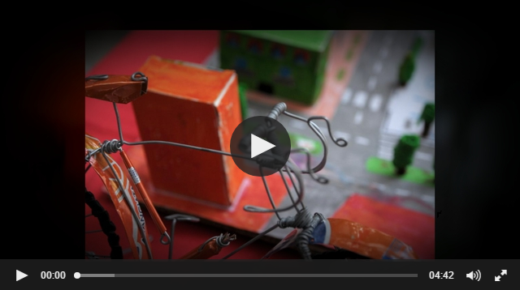

You are hereNews
News
Le ultime notizie di PalermoScienza
Continua Mare di scienza: un'estate tra arte, scienza e movimento
Continua Mare di scienza, il ciclo di attività ludico-scientifiche, ludico-artistiche e motorie che l'associazione PALERMOSCIENZA, in collaborazione quest'anno con l'Ecomuseo Mare Memoria Viva e l'associazione diARIA, propone durante il periodo estivo.
Le attività, ideate per i bambini dai 5 ai 10 anni, saranno numerose e differenziate, incentrate su diverse discipline quali matematica, fisica, chimica, geologia, biologia, astronomia, archeologia e saranno autoconsistenti: in questo modo i partecipanti potranno inserirsi in qualsiasi momento e scoprire ogni giorno il mondo attraverso differenti chiavi di lettura.
Le attività si svolgeranno dal 28 agosto all'8 settembre, dal lunedì al venerdì, dalle 8:15 alle 14:30, per il turno mattutino; dal martedì al venerdì, dalle 15:00 alle 18:00, per il turno pomeridiano, presso l'Ecomuseo urbano (ex deposito locomotive Sant'Erasmo), in via Messina Marine 20, a Palermo.
Il costo a partecipante è di € 60 a settimana, per il turno mattutino e di € 35 a settimana, per il turno pomeridiano. Per informazioni più dettagliate visionare la locandina.
Le attività saranno attivate al raggiungimento di un numero minimo di partecipanti.
Per informazioni e iscrizioni: Mare memoria viva, cell.: 3283394167, e-mail: info@marememoriaviva.it, oppure segreteria@palermoscienza.it.
Vi aspettiamo
Mare di scienza: un'estate tra arte, scienza e movimento
Riparte a grande richiesta Mare di scienza, un ciclo di attività ludico-scientifiche, ludico-artistiche e motorie che l'Associazione PALERMOSCIENZA, in collaborazione quest'anno con l'Ecomuseo Mare Memoria Viva e l'associazione diARIA, propone durante il periodo estivo.
Le attività, ideate per i bambini dai 6 ai 10 anni, saranno numerose e differenziate. Esse si svolgeranno dal 12 giugno al 14 luglio, dalle 09:00 alle 13:00, e saranno autoconsistenti: in questo modo i partecipanti potranno inserirsi in qualsiasi momento e ogni giorno potranno scoprire il mondo attraverso attvità stimolanti.
Le attività si terranno, dal martedì al venerdì, in via Messina Marine presso l'Ecomuseo urbano (ex deposito locomotive Sant'Erasmo), mentre il lunedì sarà dedicato a visite ed escursioni per conoscere o rivivere spazi sempre diversi e suggestivi della nostra città.
Sotto la locandina per visionare il calendario e gli orari.
Il costo a partecipante è di € 60 a settimana.
Le attività saranno attivate al raggiungimento di un numero minimo di partecipanti.
Per informazioni e iscrizioni
Mare memoria viva: cell.: 3283394167, e-mail: info@marememoriaviva.it oppure segreteria@palermoscienza.it
PALERMOSCIENZA a La Notte Bianca della Scuola
PALERMOSCIENZA a La Notte dei Musei
Sabato 20 maggio 2017 l'Associazione PALERMOSCIENZA ha partecipato per la prima volta alla tredicesima edizione de La Notte dei Musei, manifestazione patrocinata dall'UNESCO, dall'ICOM e dal Consiglio d'Europa, che si è svolta in contemporanea in trenta paesi europei.
L'Associazione è stata presente in due distinte postazioni della città, il Museo Storico dei Motori e dei Meccanismi e l'Ecomuseo Urbano Mare Memoria Viva, proponendo sia attività dedicate ai bambini che altre dedicate a un pubblico più vasto ed eterogeneo, quali attività brevi di biologia, fisica e astronomia, matematica e geologia, laboratori di Arte e Scienza e un seminario sui fenomeni luminosi e ottici.
PALERMOSCIENZA partecipa alla sesta edizione de La Notte Bianca della Scuola
La Notte Bianca della Scuola è l’evento conclusivo della manifestazione Palermo apre le porte. La scuola adotta la città, organizzata dal Comune di Palermo e giunta quest'anno alla 23esima edizione. Ad essa partecipano le scuole impegnate nell’adozione di alcuni monumenti della città, per un periodo che si protrae da marzo a maggio, con appuntamenti previsti per quattro fine-settimana.
Quest’anno la sesta edizione de La Notte Bianca della Scuola avrà luogo il 26 maggio, si svolgerà in contemporanea in diversi luoghi del centro storico (piazza Verdi, via Maqueda, piazza Bellini, piazza Pretoria, Corso Vittorio Emanuele, piazza Bologni), per l'occasione chiusi al traffico e trasformati in scenari dedicati alle molteplici e diversificate attività in calendario, attività che inizieranno alle 17.00 per concludersi alle 24.00.
L'associazione PALERMOSCIENZA sarà presente in piazza Bologni e proporrà al pubblico micro attività di biologia, astronomia e matematica.
Vi aspettiamo numerosi!

PALERMOSCIENZA partecipa a La Notte dei Musei
Sabato 20 maggio 2017 l'Associazione PALERMOSCIENZA parteciperà per la prima volta alla tredicesima edizione de La Notte dei Musei, manifestazione patrocinata dall'UNESCO, dall'ICOM e dal Consiglio d'Europa, che si svolge in contemporanea in trenta paesi europei.

Per l'occasione, gli appuntamenti organizzati da PALERMOSCIENZA saranno numerosi e si svolgeranno presso due diversi luoghi cittadini: il Museo Storico dei Motori e dei Meccanismi e l'Ecomuseo Urbano Mare Memoria Viva.
Gli eventi previsti presso il Museo Storico dei Motori e dei Meccanismi (Viale delle Scienze, 8) prenderanno il via alle 19.30, si concluderanno alle 24.00, saranno a ingresso libero e prevederanno sia attività dedicate ai bambini, che altre pensate per un pubblico più vasto e differenziato:
-
Mille foglie, mille idee.... mille fogli, attività brevi di biologia, fisica e astronomia dedicate ai bambini (dalle 19.30 alle 24.00);
-
Visite guidate al Museo Storico dei Motori e dei Meccanismi, aperte a tutti (dalle 19.30 alle 24.00);
-
Ottica... uno sguardo: esplorazioni di fenomeni luminosi e ottici, seminario della durata di 15-20 minuti aperto a tutti (alle 20.00 e alle 22.00).

Le attività previste presso l'Ecomuseo Urbano Mare Memoria Viva (Via Messina Marine, 27) inizieranno alle 19.30 e si concluderanno alle 23.00. In contemporanea con le attività proposte dall'Ecomuseo e le osservazioni astronomiche organizzate dall’INAF-Osservatorio astronomico di Palermo, gli esperti di PALERMOSCIENZA proporranno laboratori di Arte e Scienza e brevi attività incentrate sugli exhibit di matematica e di geologia dell'Associazione presenti all'interno dell'Ecomuseo.
L'ingresso alle attività proposte dall'Associazione è gratuito.
Vi aspettiamo numerosi!
FabLab@School Palermo
Durante la X edizione di Esperienza inSegna 2017 dedicata all'Ambiente, gli alunni dell'ITI Vittorio Emanuele III di Palermo hanno animato gli exhibit ideati dall'associazione PALERMOSCIENZA e realizzati insieme nell'ambito del progetto FabLab@School presso l'officina FabLab, che si trova in un capannone dell'istituto.
Partendo dall'idea di base, dai progetti cartacei e dai prototipi realizzati dagli alunni si è passati ai progetti digitali fino alla realizzazione materiale degli exhibit.
Esperienza inSegna 2017- Ambiente: consegna attestati e... sorrisi!
E come di consueto, sul finire dell'ultima mattina della manifestazione, in un'aula gremita di gente, l'Associazione PALERMOSCIENZA ha consegnato alle scuole espositrici gli attestati di partecipazione alla decima edizione di Esperienza inSegna 2017 dedicata quest'anno all'Ambiente.
Buona visione e alla prossima!
Esperienza inSegna 2017- Ambiente... siamo giunti all'ultimo giorno (ma non all'ultima pillola)!
Ultimo giorno della manifestazione ricco dei suoi eventi caratteristici: esposizione degli exhibit, laboratori, spettacoli e conferenze. E per quanto riguarda queste ultime, nel programma del giorno, oltre alle repliche delle conferenze Ambiente e cambiamento globale a cura dell'Associazione Vulcani e Ambiente e L'uomo e l'ambiente a cura di EcoCampus Keystone srl, il ritorno della confernza interattiva Senso dell’ambiente e senso dell’umano, caratterizzata dalla formula gli studenti interrogano, rispondono Luciano Sesta dell'Università di Palermo e Matilde Passantino, divulgatore scientifico, con la partecipazione di Patrizia Rizzuto del Liceo scientifico S. Cannizzaro di Palermo, nel ruolo di moderatrice.
E mentre negli spazi esterni di Viale delle Scienze si svolgevano la visita guidata Osservazioni del Sole a cura dell'INAF – Osservatorio astronomico di Palermo e la parte esterna del laboratorio Fare per capire e Scienza Lab Terra e acqua ideato e curato dall'Associazione PALERMOSCIENZA, all'interno del Polididattico avvenivano le repliche del laboratorio Tutelare l'ambiente: ricerca bibliografica… "sostenibile" a cura del Sistema bibliotecario e Archivio storico d’Ateneo.
Due gli spettacoli in programma: Il fiume è vivo! a cura di Gloria Calì e Giuseppe Acuto della Scuola secondaria di 1° grado Cosmo Guastella di Misilmeri e Alla ricerca dei rifiuti scomparsi a cura di Giuseppina Marino e Maddalena Seminara dell'Istituto comprensivo Ninni Cassarà di Partinico, recitati entrambi dai bravi e giovanissimi attori dei rispettivi istituti.
Nella tarda mattinata si è svolta la tavola rotonda I banchi dello Stretto di Sicilia “candidati” alla Riserva della biosfera dell'UNESCO con la partecipazione di Aurelio Angelini della Fondazione Patrimonio UNESCO Sicilia, Agostino Tomasello dell'Università di Palermo e Angela Accardi della Soprintendenza del Mare e, in chiusura della manifestazione, il seminario pomeridiano La fisiologia dell’orecchio. Ipotesi sui processi che provocano la sensazione di piacere, armonia, in relazione alla musica a cura di Mario Ferreri, dottore in medicina.
A breve una pillola conclusiva dedicata alla consegna degli attestati che si è svolta nella parte finale della mattina.
A presto!
Penultimo giorno di Esperienza inSegna 2017... nona pillola!
La nona mattina della manifestazione è iniziata con un calendario ricco di appuntamenti. Tra i nuovi spettacoli proposti, Una città pulita a cura di Valeria Macaluso e Francesca Seminara dell'Istituto comprensivo Ninni Cassarà di Partinico, mentre si sono svolte le repliche de Il fiume è vivo! spettacolo curato da Gloria Calì e Giuseppe Acuto della Scuola secondaria di 1° grado Cosmo Guastella di Misilmeri.
Sono continuate le visite guidate Osservazione del Sole a cura dell'INAF - Osservatorio astronomico di Palermo presso l'Edificio 8 di Viale delle Scienze, mentre negli spazi del Polididattico, oltre alla mostra degli exhibit, si sono succedute le seguenti conferenze: La robotica per il monitoraggio ambientale a cura di Antonio Chella dell'Università di Palermo, Genesi: fermo immagine su un mondo che scompare a cura di Marco Picone dell'Università di Palermo e del fotografo Valerio Bellone, Ambienti extra-solari: alla ricerca di una Terra 2.0 a cura di Antonio Maggio dell'INAF - Osservatorio astronomico di Palermo, La gestione dei rifiuti verso un'economia circolare a cura i Gaspare Viviani dell'Università di Palermo.
Laboratorio del giorno Tutelare l'ambiente: ricerca bibliografica… "sostenibile" a cura del Sistema bibliotecario e Archivio storico d’Ateneo.
Nel pomeriggio, presso la Sala dei 99 di Palazzo Branciforte di Palermo, si è svolto lo spettacolo Il Sale della Terra di Wim Wenders e Juliano Ribeiro Salgado.
Ci vediamo domani per l'ultimo giorno!